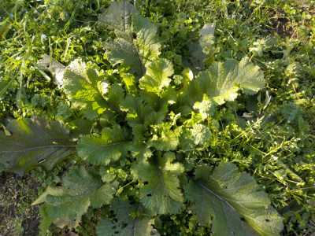

遊びで植物を育てよう
2021/01/31
マリーゴールドの種を採りました。

イチゴの本を読んでいたら、マリーゴールドを植えましょうと書いてあったので種を採りました。
これでマリーゴールドが大量生産できます。
4月になったらポットに蒔いて、育ったらあちこちに植えようと思っています。
【1月TOP】 【日記TOP】 【園芸TOP】
2021/01/31
雑草が伸びていますね。

まだ冬なので雑草には成長して欲しくないですが、大きく育ってますね。
野菜が育っているんだから雑草も育って当たり前ですね。
草抜きしないと。
【1月TOP】 【日記TOP】 【園芸TOP】
2021/01/17
雪は溶けたけど何もやる気がしない。
先週の雪はほぼ解けて作業が出来るようになりましたが、やる気が出ません。
慌ててすることもないので、のんびりしようと思います。
【1月TOP】 【日記TOP】 【園芸TOP】
過去の日記
【2020年1月の日記】
【2019年1月の日記】
【2018年1月の日記】
【2017年１月の日記】
【2016年1月の日記】
【2015年1月の日記】
【2014年1月の日記】
【2013年1月の日記】
【1月TOP】
【日記TOP】
【園芸TOP】
畑仕事じゃないよ。
【おいしいものを食べよう。】【しっかり寝よう。】
【ソロ活をしよう!】【季節感のあることをしよう。】【動画視聴はほどほどに。】【当サイトの全てのコンテンツは無断転載禁止です。】